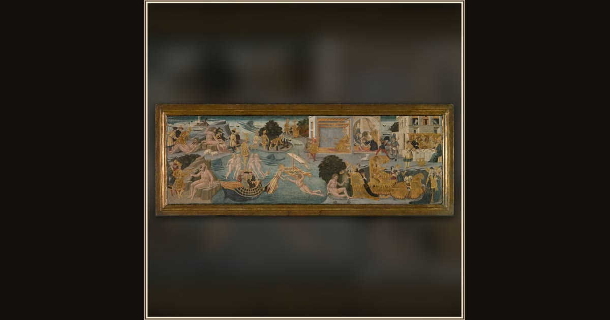

The Adventures of Ulysses
Apollonio di Giovanni (Italian, 1415/17-1465) · 1435–45 · The Art Institute of Chicago · Chicago, USA
Painted on a wedding chest almost six centuries ago, this panel follows Ulysses through the adventures of his long voyage home. Explore its place in Book IX of the Odyssey.